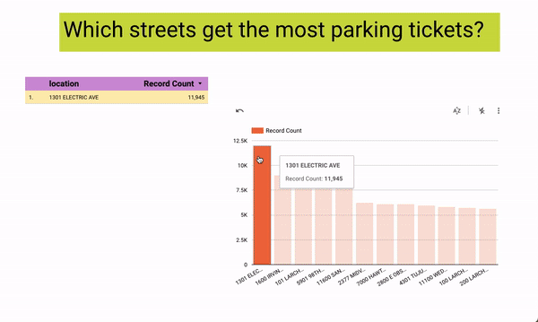

ML
PROJECTS
Sushi Adventure
[GitHub]
Experience the ultimate sushi exploration with Sushi Adventure, a website dedicated to uncovering the hidden gems of the Los Angeles sushi world.
With our recommendation system, we curate personalized sushi recommendations based on ratings, reviews, and price information.
Find the perfect sushi spot that aligns with your preferences and embark on a memorable dining experience.
Tech used: HTML, CSS, JavaScript, Python, Flask, Machine Learning, Data Analysis, Yelp Fusion API, Git/GitHub, Responsive Design,
Full-Stack Development, Front-End Development, Back-End Development, Web Application, User Experience (UX), Data Visualization,
Deployment (e.g., Heroku, GCP, AWS)
Lucky Parking (Hack for LA)
[GitHub]

[Interact with the data yourself on Looker Studio]
As a passionate volunteer with Hack for LA, I am actively involved in a project focused on visualizing parking data to drive understanding of the effects of parking policies on a neighborhood-by-neighborhood basis in the vibrant City of Los Angeles.
Leveraging my technical expertise, I have successfully connected a robust data pipeline to the API and seamlessly integrated Google Cloud Platform (GCP) with Looker.
This collaborative effort aims to provide stakeholders with an intuitive platform that presents comprehensive parking data in a visually compelling manner.
By volunteering my skills and contributing to this project, I am playing a crucial role in empowering communities to make data-informed decisions regarding urban planning and transportation strategies.
Through the visualization of parking data, we aim to raise awareness, facilitate meaningful discussions, and drive positive change in the City of Los Angeles.
Tech Used: Data pipelines, APIs, Google Cloud Platform (GCP), Looker, Data visualization, Data analysis, Urban planning, Transportation data
Document Summarizer
[GitHub]
Document Summarizer is a cutting-edge project that transforms the way we handle extensive text content.
In today's information-driven world, having a tool that can swiftly and accurately distill key insights from lengthy documents is crucial.
Using state-of-the-art natural language processing techniques, Document Summarizer automatically analyzes and condenses large text documents into clear and concise summaries.
Whether you're a researcher, student, or professional working with research papers, reports, or articles, this tool will significantly streamline your workflow, saving you valuable time and effort.
Tech used: Natural Language Processing (NLP), Text Summarization, Machine Learning, Artificial Intelligence, Python, Flask, OpenAI, GPT-3, Web Application, API Integration, Text Processing, Data Science, Software Development, GitHub, Command Line Interface (CLI), Text Analysis, Sentiment Analysis, Language Model, Information Extraction, Data Preprocessing
PHD/FELLOWSHIP RESEARCH
Clustering whole-exome sequences of breast cancer and associations with staging and molecular subtype (second author)
[Journal of Clinical Oncology]
I was a coauthor on this research paper during my fellowship at City of Hope. This was my first experience with cancer research! Here are the conclusions of the paper: "Our approach, which uses unsupervised machine learning on WES to create genetic groups of cancers, considers the joint mutational state – present or absent – of multiple genes for their clinical relevance. This reveals many additional variants that may have been previously overlooked or of uncertain significance."
The Splitting Theorem and Topology of Noncompact Spaces with Nonnegative N-Bakry Émery Ricci Curvature
[arXiv]
In my research paper, I present a generalization of topological findings previously established for noncompact manifolds with nonnegative Ricci curvature. Specifically, I extend these results to spaces characterized by nonnegative N-Bakry Émery Ricci curvature. The study focuses on investigating the Splitting Theorem and the geodesic loops to infinity property within the context of spaces exhibiting nonnegative N-Bakry Émery Ricci curvature. Furthermore, I demonstrate that if Mn represents a complete, noncompact Riemannian manifold with nonnegative N-Bakry Émery Ricci curvature, where N>n, the homology group Hn−1(M,ℤ) is determined to be 0. This research has been published in the Proceedings of the AMS.
Locally Homogeneous Non-gradient Quasi-Einstein 3-Manifolds.
[arXiv]
In this paper, we classify the compact locally homogeneous non-gradient m-quasi Einstein 3-manifolds. Along the way, we prove that given a compact quotient of a Lie group of any dimension that is m-quasi Einstein, the potential vector field X must be left invariant and Killing. We also classify the nontrivial m-quasi Einstein metrics that are a compact quotient of be the product of two Einstein metrics. We also show that S1 is the only compact manifold of any dimension which admits a metric which is nontrivially m-quasi Einstein and Einstein. This research has been published in the Advances in Geometry.
My thesis:
[thesis]
I'm so excited to share my thesis with you, and I hope you'll find it as fun to read as I found it enjoyable to write! All illustrations in the thesis were created using Procreate and Gravit.
Abstract: The thesis begins with an intuitive introduction to calculus on manifolds for non-mathematicians, followed by a semi-intuitive explanation of Ricci curvature for non-geometers. We provide descriptions of N-Bakry-Émery Ricci curvature and N-quasi Einstein metric.
The main focus of this thesis revolves around the N-Bakry-Émery Ricci curvature and N-quasi Einstein metric.
Our first set of key results encompasses the generalization of topological findings previously established for noncompact manifolds with nonnegative Ricci curvature to spaces exhibiting nonnegative N-Bakry Émery Ricci curvature. We delve into the exploration of the Splitting Theorem and a property known as the geodesic loops to infinity property in relation to spaces characterized by nonnegative N-Bakry Émery Ricci curvature. Additionally, we prove that if M^n is a complete, noncompact Riemannian manifold with nonnegative N-Bakry Émery Ricci curvature, where N > n, then the homology group Hn-1(M, Z) is 0.
In our second set of major findings, we classify compact locally homogeneous non-gradient N-quasi Einstein 3-manifolds. Along the way, we establish that for a compact quotient of a Lie group of any dimension that is N-quasi Einstein, the potential vector field X must be both left invariant and Killing. Furthermore, we provide a classification of nontrivial N-quasi Einstein metrics that are compact quotients of the product of two Einstein metrics. Lastly, we demonstrate that S^1 is the sole compact manifold of any dimension that admits a metric which is nontrivially N-quasi Einstein and Einstein.
An example related to the N-Bakry-Émery Ricci curvature and a punctured torus
[pdf]
Abstract:This is a note about relates to the N-Bakry-Émery Ricci curvature and the punctured torus. Specifically, we attempt to answer the question,“Can a punctured torus admit metrics which satisfy nonnegative ∞-Bakry-Émery Ricci curvature?"
RESUME
[download]
Alice Wu Lim, PhD | Data Scientist
Email: limwualice at gmail dot com
Education
Syracuse University / PhD in Mathematics
August 2015 - May 2021
Thesis in Differential Geometry
Received Kibbey Prize for excellence in PhD research.
Syracuse University / MS in Mathematics
August 2015 - May 2018
Relevant courses include: Probability and Statistics (4 graduate courses), Enumeration, Design, and Matroids, Graph Theory, Functions in Complex Variables, Calculus on Manifolds
University of California, Los Angeles / BS in Mathematics
August 2011 - May 2015
Relevant courses include: Fourier Analysis, Introduction to C++
Experience
IRS / Data Scientist
October 2023 - present
Hack for LA / Data Scientist (Volunteer)
January 2023 - September 2023
- Designing and implementing a data cleaning pipeline to transform raw input data from the Socrata API related to LA city parking and update the Google Cloud Platform database with geospatial data
- Developing a list of data cleaning steps to ensure the data meets the client's requirements
- Creating code to extract, transform, and load data into the database
- Conducting multiple tests to ensure data is correctly formatted and cleaned
- Deploying the pipeline to GCP for real-time data processing and updates
- Managing the end-to-end project, from initial requirements gathering to final deployment, ensuring timelines and deliverables are met
- Visualized data using Looker Studio
- Collaborated with team members to troubleshoot and resolve any issues that arose during the project
City of Hope / Data Scientist (Research fellowship)
April 2022 - October 2022
- Used an unsupervised learning machine learning predictive model in Python and SQL, statistical model, and advanced data analysis to discover statistically significant correlation between breast cancer genomic clusters and tnm-staging as well as breast cancer biomarker sets.
- Learned about breast cancer and machine learning techniques, while adapting projects to doctors’ needs.
- Completed technical portion of data science project, manuscript is now in preparation.
- How this was accomplished:
- Goal: use unsupervised learning model to cluster large datasets of patient genomic data, find statistical correlation between engineered patient features and the detected clusters
- Collected big data: Queried terabytes of data from over 30 satellite hospital databases; transformed and combined data into cleansed dataframes with hundreds of features
- Clustered data: Constructed k-modes clustering model and detected genomic clusters of patient data in order to analyze genomic features
- Engineered features: Used domain knowledge to engineer dozens of new features from patient data to test for correlation with genomic clusters
- Performed statistical analyses using analytical tools: Performed non-parametric significance testing which revealed statistically significant correlations between several patient features and the genomic clusters
- Communicated findings: Presented the findings to business partners, collaborators, and non-experts
Syracuse University / PhD Researcher
August 2015 - May 2021
- Wrote 2 single-author differential geometry research papers which were accepted for publication in prestigious journals
- Used Python to compute explicit solutions to N-quasi Einstein equation under certain constraints
- Gave 12 presentations at conferences and invited talks where I communicated results to various sized audiences
- Received Kibbey award for demonstrating excellence in PhD research
- Studied graduate level statistics and probability courses
- Studied Calculus of variations and Euclidean and non-Euclidean geometry, which have applications in mathematical optimization and satellite access geometry, respectively
Research Papers
- Clustering whole-exome sequences of breast cancer reveals association with staging and molecular subtype, in preparation
- The Splitting Theorem and Topology of Noncompact Spaces with Nonnegative N-Bakry Emery Ricci Curvature; Proceedings of the AMS, May 2021; https://doi.org/10.1090/proc/15240
- Locally Homogeneous Non-gradient Quasi Einstein 3-Manifolds; Advances in Geometry, January 2022; https://doi.org/10.1515/advgeom-2021-0036
Presentations
- Gave 3 talks at City of Hope about my data science/breast cancer research
- Gave 12 invited math talks at various conferences and institutions
- Presentations were to various sized audiences from small departments to large conferences
- My goal with giving presentations is to incorporate as many visual aids as I can to get my point across. I make sure to start by stating the goal of my project and spend the rest of the talk exploring how I met my goal.
- See here for a link to some of my presentations
LINKS
Email
[limwualice at gmail dot com]
Feel free to message me at the email address above for professional things!
This is a blog that I made where I'm documenting my understanding of machine learning theory. I'm also having fun using procreate and html+css tools. Let me know if you have suggestions or comments.
Linkedin
[linkedin]
I also welcome Linkedin messages about professional things. If you'd like to have a zoom call, please message me here!
Github
[github]
This is what I'm currently working on. Let's collaborate!